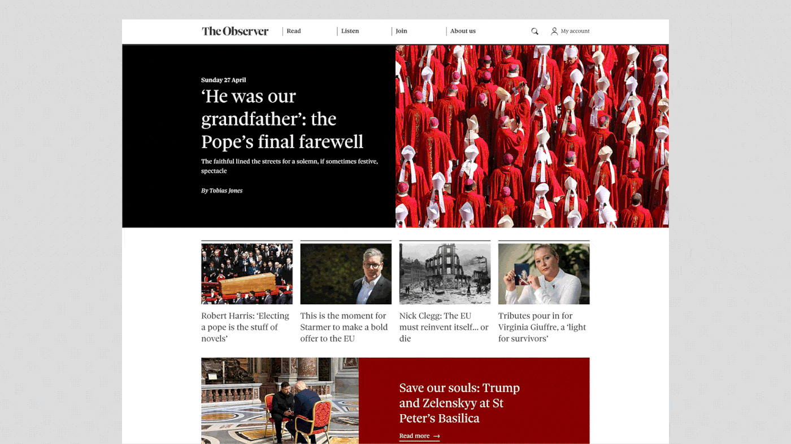
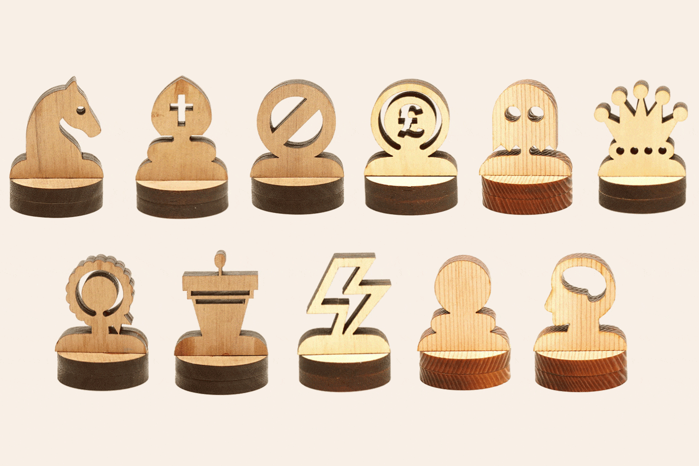

Designing, developing and launching the new digital Observer
Product design lead, UI/UX, branding
Launching the first dedicated app for the Observer was a rare combination of honouring a 235 year heritage whilst starting completely from scratch. We began with the editorial strategy: a curated edition, every day, hand picked by our editors. The brief was to make the rest of the app feel like browsing a book store.


George Orwell once coined the Observer as 'The enemy of nonesense', and I hope the design reflects this. A curated edition, everyday, to make sense of a noisy world. News, culture, style, music, arts, and food all sitting happily together as equal parts. To quote James Harding quoting Chimamanda Ngozi Adichie: 'dignity is as important as food'.
Creative director: Jon Hill
Digital editor: Basia Cummings
Senior digital editor: Claudia Williams
Product lead: Holly Cook
Head of photography: Jon Jones
Production: Elaine McCallig and Brad Gray
Social: Tomini Babs
Front end development: AND Digital
Back end development: goodylabs

Branding the new Observer
Component library design, type hierarchy and colour palette

Key areas I was responsible for:
Leading the design of the component library, type hierarchy and colour palette
Designing the layout of each tab/ page, from editorial sections, to audio, to puzzles
Briefing and managing a team of internal and external product designers
Pitching to key stakeholders and editors
Delivering and handing-off design work to two development teams (one managing front end, one back end) with simultaneous sprints
QA testing and user testing
Training the digital production team (editors, subs, photo editors)
Building and designing our email newsletters
Spot illustrations for pages, articles and puzzles


The first pass at the Observer's digital presence
What we launched with in April 2025
I oversaw the interim website launch during the transition of ownership from The Guardian to Tortoise Media. We quickly iterated on Tortoise’s existing website to design something that felt distinct but also adopted the brand we inherited.

Re-designing the Tortoise app towards audio journalism
Re-design, UX/UI
In June 2023, I lead the design of the Tortoise news app as we pivoted towards audio journalism, with the aim to increase member engagement through curation and habit formation After the launch, on-platform listens increased 10x.
Here's some of the key features:
- A seamless listening experience
- Download and add episodes to your queue, and pause and restart from where you left off
- Personalised feed – discover more of what you want by following your favourite journalists, topics and shows
- Build your own playlist with all your favourites
- Editorially curated playlists by Tortoise editors
- Uncompromising audio quality. All our podcasts are now available in premium audio sound

Shedding light onto the world's largest unelected chamber
The Peer Review tool is a visual guide to one of the world's largest unelected chambers. Our aim was to lift the lid on the House of Lords, and explain who's in it, how it operates and, ultimately, why an understanding of this matters. I designed and directed our stop-motion led narrative piece, as well as the user journeys/ user interface of our interactive tool. You can read more about what went on behind the scenes in this piece I wrote: Click here


Tortoise x Sky News: The Westminster Accounts
In the spirit of transparency, the Westminster Accounts is the first fully searchable database of the money flowing into the British political system. Tortoise were commissioned by Sky News to turn a huge database of donations into something digestable.
I led the UX/UI of the tool, driving the conceptualisation and execution. The tool has since been used by over half a million people, and has received awards from The Press Gazette, The Society of Editors' Media Freedom Awards 2023 and The Royal Television Society Journalism awards 2024.


Goodreads, for recipes
Through a combination of Claude and Visual Studio Code, I have been designing, building and iterating on an app called ‘Foodlio’. AI analysis features allow the user to create recipes in seconds, save them to a ‘digital recipe binder’ and share with friends.
The key features of the app so far:
- Scan a photo of your dish to generate recipe and ingredient list
- Create groups and set cooking challenges
- Like, comment, rate and save other peoples recipes

About me
Senior product designer
My job is to find the best ways to sell and tell a story. That means working across the newsroom, including: stakeholders, engineers, data scientists, audio producers, marketing, production, designers, puzzle editors, and sometimes – chefs. I’ve delivered large scale projects, such as the initial Observer website after its acquisition by Tortoise Media, or the digital re-brand and launch of the first dedicated Observer app. I’ve also collaborated with clients like Sky News on The Westminster Accounts, and The Open Society Foundation on The Peer Review.
Links:
E: oscaringham3@gmail.com
Instagram: @oscaringhamdesign